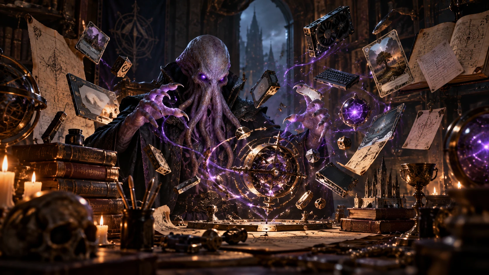

Web application / Sorcery: Contested Realm
Ledger
Manage your collection and build decks in one place. Import and export card lists, check your deck, explore its statistics and share it with other players.
The workshop of Kraxiloth
Independent applications, tools and experiments.
Built out of curiosity. Made to be used.

01 / Selected projects
Applications for the games I play and the problems I encounter. Each has its own home, purpose and identity.
Web application / Sorcery: Contested Realm
Manage your collection and build decks in one place. Import and export card lists, check your deck, explore its statistics and share it with other players.
Game utility / Elden Ring
Back up Elden Ring saves, archive individual characters and bring them back when you need them. A practical tool for keeping your playthroughs close at hand.
On the workbench
An action RPG experiment in Unreal Engine. Early development.
02 / Tools & open data
My Sorcery projects live together at sorcery.no. Alongside the applications, public datasets give other developers material to build with.
03 / About
Ancient Workshop is the home of projects by Kraxiloth.
I build applications for games, collections and communities I care about. Most begin with a missing tool, an irritating limitation, or an idea I want to explore.
Here you’ll find the useful results, the ongoing projects and a few things still taking shape.